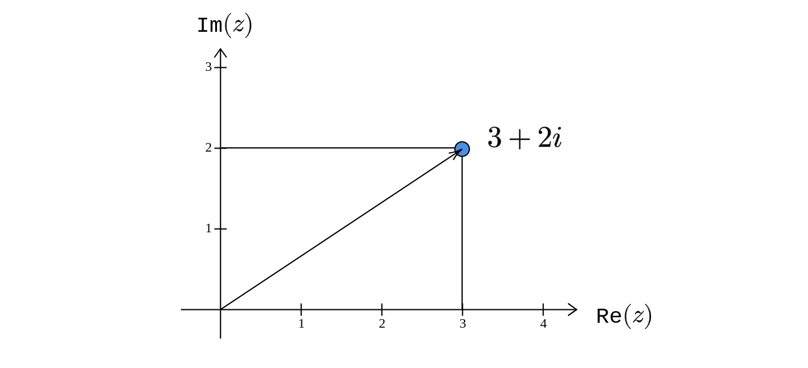
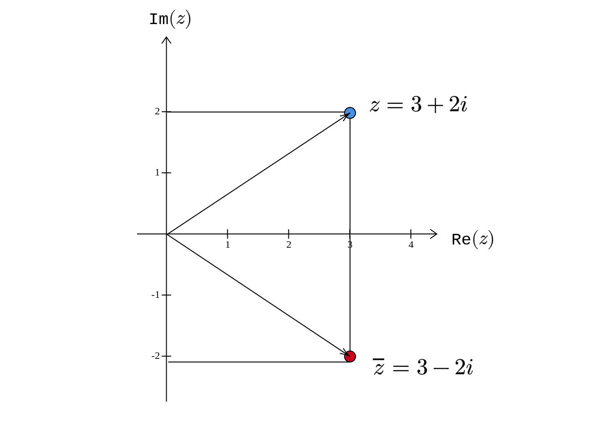
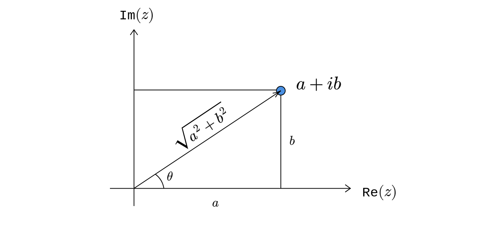
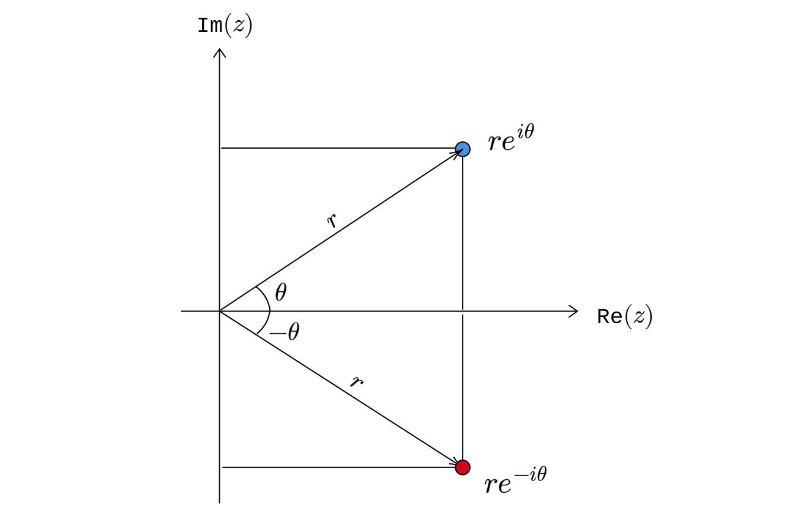

Complex Numbers
Introduction
A complex number is of the form \(\displaystyle a+ib\), where \(\displaystyle a\) and \(\displaystyle b\) are real numbers and \(\displaystyle i^{2} =-1\). Some examples are:
- \(\displaystyle 2+3i\)
- \(\displaystyle 5-10i\)
- \(\displaystyle -i\)
- \(\displaystyle 5i\)
- \(\displaystyle 4\)
The set of complex numbers is denoted by \(\displaystyle \mathbb{C}\). Every real number is a complex number. But every complex number need not necessarily be a real number. In terms of set theoretic notation, \(\displaystyle \mathbb{R} \subset \mathbb{C}\) but \(\displaystyle \mathbb{C} \not \subset \mathbb{R}\).
A complex number has two parts to it: real and imaginary part. For the complex number \(\displaystyle 2+3i\), the real part is \(\displaystyle 2\) and the imaginary part is \(\displaystyle 3\). So, any complex number \(\displaystyle z\) can be written as \(\displaystyle z=\text{Re}( z) +\text{Im}( z) \cdot i\).
We can understand complex numbers geometrically by plotting the real part on the x-axis and the imaginary part on the y-axis.
This plane is called the complex plane, also called the Argand plane or Gauss plane.
Algebra
The following are some of the operations that we can do on complex numbers:
- addition (subtraction)
- multiplication (division)
- absolute value or modulus
- conjugate
We will look at each one of these operations.
Addition
Consider two complex numbers \(\displaystyle z_{1} =a_{1} +ib_{1}\) and \(\displaystyle z_{2} =a_{2} +ib_{2}\). Then:
\[ \begin{equation*} z_{1} +z_{2} =( a_{1} +a_{2}) +i( b_{1} +b_{2}) \end{equation*} \]
To add two complex numbers, we add the real part separately and the imaginary part separately. For example:
\[ \begin{gather*} \left( 1+3i\right) +\left( -5-2i\right) =\left( 1-5\right) +i\left( 3-2\right)\\ \ \ \ \ \ \ \ \ \ \ \ \ =-4+i \end{gather*} \]
Subtraction follows trivially. To compute \(\displaystyle z_{1} -z_{2}\), we can just compute \(\displaystyle z_{1} +\left( -z_{2}\right)\).
Multiplication
Consider two complex numbers \(\displaystyle z_{1} =a_{1} +ib_{1}\) and \(\displaystyle z_{2} =a_{2} +ib_{2}\). Then:
\[ \begin{equation*} \begin{aligned} z_{1} z_{2} & =\left( a_{1} +ib_{1}\right)\left( a_{2} +ib_{2}\right)\\ & =a_{1} a_{2} +a_{1}\left( ib_{2}\right) +\left( ib_{1}\right) a_{2} +i^{2} b_{1} b_{2}\\ & =a_{1} a_{2} +i\left( a_{1} b_{2}\right) +i\left( a_{2} b_{1}\right) -b_{1} b_{2}\\ & =\left( a_{1} a_{2} -b_{1} b_{2}\right) +i\left( a_{1} b_{2} +a_{2} b_{1}\right) \end{aligned} \end{equation*} \]
As an example, if \(\displaystyle z_{1} =3-2i\) and \(\displaystyle z_{2} =5+i\), then:
\[ \begin{gather*} \begin{aligned} z_{1} z_{2} & =\left( 3\times 5-\left( -2\right) \times 1\right) +i\left( 3\times 1+\left( -2\right) \times 5\right)\\ & =17-7i \end{aligned}\\ \end{gather*} \]
Before moving to division, let us look at the idea of the absolute value of a complex number.
Absolute value
The absolute value of a complex number \(\displaystyle z=a+ib\) is given by:
\[ \begin{equation*} |z|=\sqrt{a^{2} +b^{2}} \end{equation*} \]
Geometrically, we can think about it as the distance of \(\displaystyle z\) from the origin. For example, if \(\displaystyle z=3+2i\), then \(\displaystyle |z|=\sqrt{3^{2} +2^{2}} =\sqrt{13}\). The complex number (blue dot) is at a distance of \(\displaystyle \sqrt{13}\) units from the origin.

Another term for the absolute value is modulus. The absolute value of a complex number is always going to be a non-negative real number.
Conjugate
The conjugate of a complex number \(\displaystyle z=a+ib\) is denoted by \(\displaystyle \overline{z}\) and given as:
\[ \begin{equation*} \overline{z} =a-ib \end{equation*} \]
For example, if \(\displaystyle z=3+2i\) then \(\displaystyle \overline{z} =3-2i\). Geometrically, \(\displaystyle \overline{z}\) is the reflection of \(\displaystyle z\) around the x-axis:

The following is an interesting relation:
\[ \begin{equation*} z\overline{z} =|z|^{2} \end{equation*} \]
To see why this is true, consider any complex number \(\displaystyle z=a+ib\). Then:
\[ \begin{equation*} \begin{aligned} z\overline{z} & =\left( a+ib\right)\left( a-ib\right)\\ & =a^{2} -a\left( ib\right) +\left( ib\right) a-i^{2} b^{2}\\ & =a^{2} -i\left( ab\right) +i\left( ab\right) +b^{2}\\ & =a^{2} +b^{2} \end{aligned} \end{equation*} \]
Here is an interesting observation related to conjugates that will be used quite extensively in subsequent lectures: \(\displaystyle z=\overline{z}\) if and only if \(\displaystyle z\) is a real number. To see why this is true, let \(\displaystyle z=a+ib\). If \(\displaystyle z\) is a real number, then \(\displaystyle b=0\), and it is obvious that \(\displaystyle z=\overline{z} =a\). On the other hand, if \(\displaystyle z=\overline{z}\), then we have:
\[ \begin{equation*} \begin{aligned} a+ib & =a-ib\\ i\left( 2b\right) & =0\\ \Longrightarrow b & =0 \end{aligned} \end{equation*} \]
It follows that \(\displaystyle z=a\) and hence a real number.
Division
Let us try to divide two complex numbers \(\displaystyle z_{1} =a_{1} +ib_{1}\) and \(\displaystyle z_{2} =a_{2} +ib_{2}\) with \(\displaystyle z_{2} \neq 0\):
\[ \begin{equation*} \begin{aligned} \cfrac{z_{1}}{z_{2}} & =\cfrac{a_{1} +ib_{1}}{a_{2} +ib_{2}}\\ & =\cfrac{a_{1} +ib_{1}}{a_{2} +ib_{2}{}} \cdot \cfrac{a_{2} -ib_{2}}{a_{2} -ib_{2}}\\ & =\cfrac{\left( a_{1} +ib_{1}\right)\left( a_{2} -ib_{2}\right)}{a_{2}^{2} +b_{2}^{2}}\\ & =\cfrac{a_{1} a_{2} +b_{1} b_{2}}{a_{2}^{2} +b_{2}^{2}} +i\cdot \cfrac{a_{2} b_{1} -a_{1} b_{2}}{a_{2}^{2} +b_{2}^{2}} \end{aligned} \end{equation*} \]
Polar Coordinates
Consider a complex number \(\displaystyle z=a+ib\)

Using basic trigonometry, we have the following relations:
\[ \begin{gather*} \begin{aligned} r & =\sqrt{a^{2} +b^{2}}\\ & \\ \cfrac{a}{r} & =\cos \theta \\ & \\ \cfrac{b}{r} & =\sin \theta \end{aligned}\\ \end{gather*} \]
Alternatively, we have:
\[ \begin{equation*} \begin{aligned} a & =r\cos \theta \\ b & =r\sin \theta \end{aligned} \end{equation*} \]
So, the complex number \(\displaystyle z\) can be written as:
\[ \begin{equation*} \begin{aligned} z & =a+ib\\ & =r\cos \theta +i( r\sin \theta )\\ & =r(\cos \theta +i\sin \theta ) \end{aligned} \end{equation*} \]
The following result is stated without proof. If \(\displaystyle e\) is the familiar Euler’s number, then:
\[ \begin{equation*} e^{i\theta } =\cos \theta +i\sin \theta \end{equation*} \]
Using this result, we can write \(\displaystyle z\) as:
\[ \begin{equation*} z=re^{i\theta } \end{equation*} \]
\(\displaystyle r\) is the absolute value of \(\displaystyle z\) and \(\displaystyle \theta\) is called the argument of \(\displaystyle z\). This way of representing a complex number using its modulus (absolute value) and argument is called the polar coordinate representation. Using this representation, the conjugate of \(\displaystyle z=a+ib\) can be written as follows:
\[ \begin{equation*} \begin{aligned} \overline{z} & =a-ib\\ & =r(\cos \theta -i\sin \theta )\\ & =r[\cos( -\theta ) +i\sin( -\theta )]\\ & =re^{-i\theta } \end{aligned} \end{equation*} \]
We have used the fact that \(\displaystyle \cos( -\theta ) =\cos \theta\) and \(\displaystyle \sin( -\theta ) =-\sin \theta\). The geometric interpretation of the conjugate under the polar coordinates is as follows:
